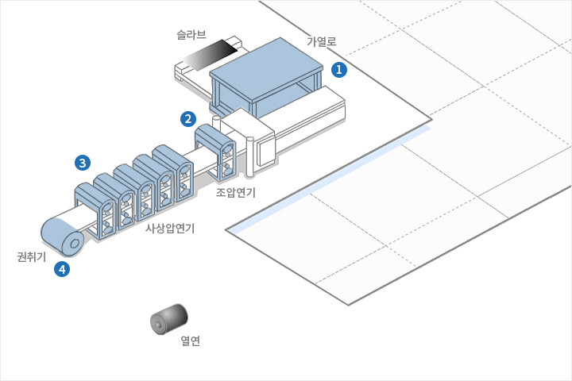
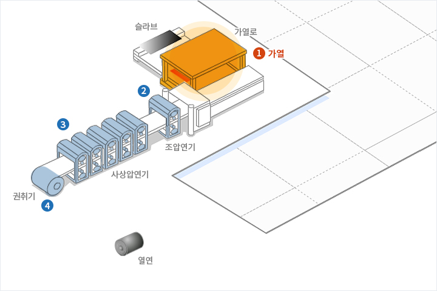
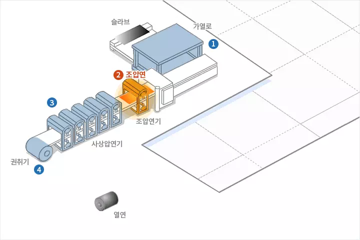
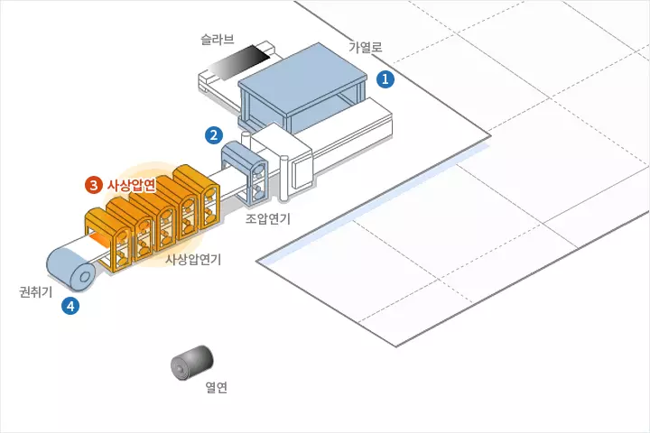
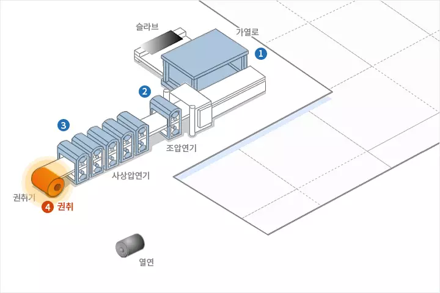

PRODUCTION
제조공정
제조공정
열연
냉연
용융아연도금
전기아연도금
열연
1.가열
연주공장에서 이송된 슬래브(Slab)를 가열로에서 충분히 가열한 후 추출하여 압연작업을 하게 됩니다. 열간상태의 슬래브(Slab) 표면에 생성된 두꺼운 스케일을 제거하기 위하여 스케일 브레이커(Scale Breaker)를 설치, 운영 하고 있습니다.
2.조압연
스케일이 제거된 슬래브(Slab)를 적당한 형상과 두께, 폭을 갖춘 압연소재로 만드는 공정입니다. 압연기의 입측과 출측에 날이 설치되어 AWC(Automatic Width Control)의 적정폭 제어에 따라 폭 방향으로 압연합니다.
3.사상압연
판을 정해진 두께와 폭으로 조절하고 용도에 맞는 마무리 온도에서 양호한 표면, 형상으로 압연하는 공정입니다. 최신 설비인 WORK ROLL SHIFT 설비와, PAIR CROSS MILL, ORG(On-Line Roll Grinding)설비는 판형상(Crown)을 제어하여 생산성과 품질 향상에 기여하고 있습니다.
4.냉각 및 권취
사상압연을 끝낸 강판은 RUN-OUT TABLE을 거쳐 권취기에서 권취됩니다. 이 TABLE ROLL상의 강판은 냉각수 스프레이에 의해 일정한 권취온도까지 냉각 됩니다.




